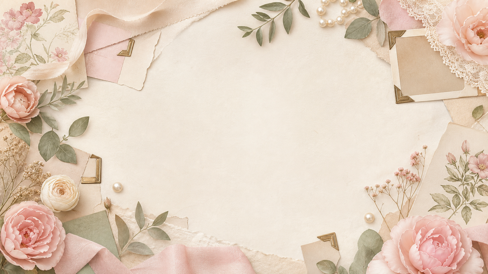

a private-feeling moodboard
A little corner of the internet for you
Photos, flowers, tiny notes, and the kind of compliments that felt worth saving properly.
open the boardmain character energy
soft moments, saved
quietly special
certified cute
the board
Personal Pinterest, but softer.
flower language
Pick a flower. Get a tiny truth.
small evidence
Reasons you are nice to have around.
saved properly
Tiny scrapbook notes.
that is the page